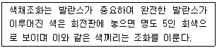
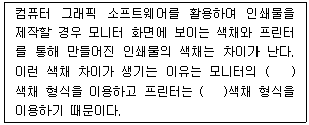
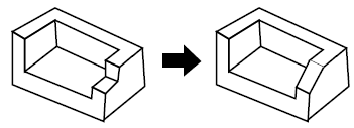
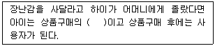

시각디자인산업기사 (2008-09-07 기출문제)
1과목: 색채학
1. 색채의 심리효과를 설명한 내용으로 틀린 것은?
- 계시대비는 일정한 자극이 사라진 후에도 지속적으로 자극을 느끼는 현상이기에 잔상과 구별이 어렵다.
- 동시대비에서 두 색 사이에 무채색을 두르면 연변대비가 줄어든다.
- 색상대비는 1차색 보다는 2차색, 3차색에서 잘 일어나 그 대비효과도 두드러진다.
- 명도단계를 연속시켜 나열한 경우 각각 인접한 색끼리 두드러져 보이는 현상을 연변대비라 한다.
(정답률: 알수없음)

2. 다음 중 무채색이 아닌 것은?
- 백색
- 탁색
- 회색
- 흑색
(정답률: 알수없음)
3. 다음 중 먼셀색상환에서 가장 인근색의 관계에 있는 것은?
- 노랑과 연두
- 주황과 파랑
- 노랑과 보라
- 노랑과 초록
(정답률: 알수없음)
4. 20대를 위한 새로운 musk향의 향수를 개발하였다. 이제품의 용기설계시 고려할 특성으로 가장 거리가 먼 것은?
- 사용자의 성별과 연령 등을 고려해야 한다.
- 색채와 향기의 공감각을 고려하여 설계하여야 한다.
- 대부분 사람들이 좋아하는 고명도, 고채도의 색을 설계한다.
- 여러 가지 소재를 고려하여 관리하기 쉬운 색채를 선택한다.
(정답률: 알수없음)
5. 파란색 물감에 흰색 물감을 섞었을 때 나타나는 변화는?

- 루드의 색채조화론
- 먼셀의 색채조화론
- 오스트발트의 색채조화론
- 비렌의 색채조화론
(정답률: 알수없음)
6. 먼셀표색계에서 색의 표기방법으로 바른 것은?
- VC/H
- HV/C
- HC/V
- CV/H
(정답률: 알수없음)
7. 오스트발트 색상환은 무채색 축을 중심으로 몇 색상이 배열되어 있는가?
- 9
- 10
- 24
- 35
(정답률: 알수없음)
8. 다음 중 한난의 감정이 없는 중성색은?
- 보라색
- 파란색
- 주황색
- 청록색
(정답률: 알수없음)
9. 다음 중 신맛이 연상되는 색채는?
- 빨강
- 회색
- 노랑
- 흰색
(정답률: 알수없음)
10. 져드의 색채조화론에 포함되지 않는 원리는?
- 질서성의 원리
- 친근성의 원리
- 동류성의 원리
- 모호성의 원리
(정답률: 알수없음)
11. 조명 및 관측조건이 달라도 주관색으로는 물체색이 별로 변화되어 보이지 않는 색지각 현상은?
- 동화효과
- 항상성
- 잔상
- 푸르킨예
(정답률: 알수없음)
12. 색의 3속성에 관한 설명으로 옳은 것은?
- 명도는 빨강, 노랑, 파랑 등과 같은 색감을 말한다.
- 채도는 빨강, 노랑, 파랑 등과 같은 색상의 선명함을 말한다.
- 채도는 빨강, 노랑, 파랑 등과 같은 색상의 밝기를 말한다.
- 명도는 빨강, 노랑, 파랑 등과 같은 색상의 선명함을 말한다.
(정답률: 알수없음)
13. 그레이스케일에 관한 설명으로 틀린 것은?
- 명도의 기준척도로 사용된다.
- 물체색의 표준과 TV, 사진, 인쇄 등의 명도 상태를 확인하는 테스트를 사용된다.
- 흰색과 검은색을 양끝에 놓고 그 중간에 명도차를 균등하게 나눈 무채색 단계이다.
- 색의 순수한 정도를 확인하는 척도이다.
(정답률: 알수없음)
14. 색채의 상징에서 빨강과 관련이 없는 것은?
- 정열
- 희망
- 위험
- 흥분
(정답률: 알수없음)
15. 빛을 프리즘에 통과하였을 때 나타난 스펙트럼상의 색 중 가장 긴 파장을 가지고 있는 것은?
- 노랑
- 빨강
- 보라
- 녹색
(정답률: 알수없음)
16. 안전색채가 쉽고 바르게 보이도록 하기 위한 유의점과 관계가 가장 먼 것은?
- 장소의 선정
- 주위의 상태
- 조명
- 큰 면적
(정답률: 알수없음)
17. 다음 중 색채조화와 관계 없는 사람은?
- 괴테(Goethe)
- 럼포드(Rumford)
- 쉐브럴(Chevreul)
- 헬름흘쯔(Helmholtz)
(정답률: 알수없음)
18. 현색계와 혼색계의 설명으로 틀린 것은?
- 현색계의 대표적 표색계는 먼셀표색계이다.
- 혼색계의 대표적 표색계는 CIE표준색체계이다.
- 현색계는 물체의 색을 심리적 3속성에 의해 분류해 낸다.
- 혼색계는 표준 색표집으로 제작되어 있다.
(정답률: 알수없음)
19. 나뭇잎이 녹색으로 보이는 이유는?
- 녹색의 빛은 투과하고 그 밖의 빛은 흡수하기 때문
- 녹색의 빛은 산란하고 그 밖의 빛은 반사하기 때문
- 녹색의 빛은 반사하고 그 밖의 빛은 흡수하기 때문
- 녹색의 빛은 흡수하고 그 밖의 빛은 반사하기 때문
(정답률: 알수없음)
20. 다음 ( )에 들어갈 내용을 순서대로 맞게 짝지운 것은?

- HVC - RGB
- RGB - CMYK
- CMYK - Lab
- XYZ – Lab
(정답률: 알수없음)
2과목: 인쇄 및 사진기법
21. 사진을 인화한 후에 사진에 보존성을 높이거나 특별한 색감을 첨가하기 위하여 하는 작업은?
- 감력
- 감감
- 토닝
- 트리밍
(정답률: 알수없음)
22. 표면가공의 목적으로 가장 거리가 먼 것은?
- 인쇄물의 광택을 방지한다.
- 잉크의 퇴색을 방지한다.
- 인쇄물에 질김성을 준다.
- 인쇄효과와 장식효과를 높인다.
(정답률: 알수없음)
23. 다음 필름 중 관용도가 가장 큰 필름은?
- B/W 고감도 필름
- 내형 발색 컬러필름
- 외형 발색 컬러필름
- 컬러 negative 필름
(정답률: 알수없음)
24. 한권의 책 분량에 해당하는 쪽들을 순서대로 이어지도록 한 묶음씩 합치는 것을 무엇이라 하는가?
- 쪽맞추기
- 고르기
- 배킹
- 제함
(정답률: 알수없음)
25. 카메라와 사람의 눈을 비교할 때 수정체는 카메라의 무엇과 같은 역할을 하는가?
- 셔터
- 조리개
- 렌즈
- 필름
(정답률: 알수없음)
26. 다음 광선 중 인무르이 입체적 표현에 가장 적합한 광건은?
- 역광
- 반역광
- 사광
- 정면광
(정답률: 알수없음)
27. 컬러현상시 미노출된 할로겐화은염(AgX)의 제거와 동시에 탈은(desilverizing)을 하는과정은?
- 현상, 발색
- 표백, 정착
- 수세, 건조
- 발색, 수세
(정답률: 알수없음)
28. 면 분할식과 같은 평면적인 톤을 가지고 상을 만드는 인화 기법으로 정상적인 피사체 톤을 하이콘트라스트 필름을 사용하여 3‾4가지의 특정 톤으로 분리한 후 한 장의 인화지에 각가 노출하여 상을 만드는 기법은?
- 선 인화
- 포스터리제이션
- 디옵터
- 표준 인화
(정답률: 알수없음)
29. 현상 주약의 산화를 방지하고 미립자 효과에 영향을 주는 현상 약품은?
- 메톨
- 아황산나트륨
- 브롬화칼륨
- 탄산칼륨
(정답률: 알수없음)
30. 버닝(Burning)에 대한 설명으로 옳은 것은?
- 기본 노출 후 사진의 일부에 빛을 더 주어 어둡게 만드는 것이다.
- 기본 노출 중에 빛의 일부를 가려서 사진의 일부분을 밝게 하는 것이다.
- 물체는 확대 렌즈의 아래에 대고 밝게 하고자 하는 부분에 빛이 닿지 않도록 하는 것이다.
- 확대 렌즈에 물체를 가까이 할수록 그림자는 작아지고 빛이 확산 및 축소된다.
(정답률: 알수없음)
31. 사진 제판법을 바탕으로 하는 오목판 인쇄방식으로 다색 인쇄물일 때는 색채가 매우 풍부하지만 다른 인쇄 방식보다 강한 인쇄 압력이 필요한 방식?
- 그라비어인쇄
- 오프셋 인쇄
- 볼록판 인쇄
- 스크린 인쇄
(정답률: 알수없음)
32. 다음 할로겐화은 중 감광물질로 사용되지 않는 것은?
- AgCl
- AgF
- AgBr
- AgI
(정답률: 알수없음)
33. 일반적인 렌즈보다 렌즈 경통의 헬리코이드를 길게 만들어 근접촬영이 쉽도록 설계한 렌즈는?
- 표준렌즈
- 광각렌즈
- 쉬프트렌즈
- 매크로렌즈
(정답률: 알수없음)
34. 일반 사진현상액의 조성 중 현상 보조제의 종류가 아닌 것은?
- 탈막제
- 보항제
- 억제제
- 촉진제
(정답률: 알수없음)
35. 제판용 드럼 스캐너에 사용하는 Ar 레이저의 주파장(Blue 와 Green)은 각각 몇 nm정도인가?
- Blue : 388, Green : 414
- Blue : 488, Green : 514
- Blue : 588, Green : 614
- Blue : 688, Green : 714
(정답률: 알수없음)
36. 다음 중 일반적으로 잉크의 점도가 가장 낮은 것은?
- 플렉소용 잉크
- 잡지용지 인쇄용 잉크
- 볼록판용 잉크
- 평판용 잉크
(정답률: 알수없음)
37. 다음 중 평판 판식과 종료가 아닌 것은?
- 난백판
- 평오목판
- PS판
- 실크스크린판
(정답률: 알수없음)
38. 사진인화지에 있어서 바리타지(baryta paper)라고 하는 것은 인화지 면의 반사율을 높이기 위하여 유제층과 지지체사이에 주로 어떤 약품을 넣은 것을 말하는가?
- 황산바륨
- 황산칼슘
- 황산아연
- 황산마그네슘
(정답률: 알수없음)
39. 종이의 시험법 중 잉크나 물에 대한 종이의 침투 저항성을 나타내는 것은?
- 백색도
- 흡유도
- 사이즈도
- 광택도
(정답률: 알수없음)
40. 다음 중 접사기구와 가장 거리가 먼 것은?
- 컴버터
- 중간링
- 벨로즈
- 클로즈업 렌즈
(정답률: 알수없음)
3과목: 시각디자인론
41. 다음 중 환경 디자인에 속하지 않는 것은?
- 애니메이션 디자인
- 점포 디자인
- 인테리어 디자인
- 조경 디자인
(정답률: 알수없음)
42. 우리나라에서 최초의 광고가 실렸던 신문은?
- 황성신문
- 독립신문
- 한성주보
- 한성순보
(정답률: 알수없음)
43. 1907년~1908년 파리에서 생겨나 미술운동으로 피카소, 브라크 등이 자연과 인간을 기본적이고 기하학적인 단순한 형태로 환원시키려 한데서 시작된 디자인 사조는?
- 신인상파
- 입체주의
- 초현실주의
- 다다이즘
(정답률: 알수없음)
44. 임의의 경사를 갖는 입방체를 놓은 경우 수직방향의 선은 각기 수직으로 평행하지만 수평의 선은 모두 좌우 각기 소점으로 모이는 투시법은?
- 평행투시
- 3점 투시
- 유각투시
- 사각투시
(정답률: 알수없음)
45. 바우하우스와 관련이 없는 것은?
- 미술가의 가치있는 도구로서 기계를 허용
- 실용성을 추구하는 생활미술로써 디자인의 독자적 범주 확립
- 기술과 창의성을 구별
- 건축, 공예, 디자인을 분리하여 심미주의 변환
(정답률: 알수없음)
46. 보기의 왼쪽 입체가 오른쪽 입체로 변할 때 수정해야 하는 투상도는?

- 평면도
- 정면도
- 우측면도
- 배면도
(정답률: 알수없음)
47. 다음 중 치수기입의 일반 법칙이 아닌 것은?
- 치수는 특별히 명시하지 않는한 가공 완성 치수를 표기한다.
- 치수는 되도록 해당되는 형체를 가장 잘 보여줄 수 있는 주 투상도에 집중한다.
- 치수 수치는 치수선에 평행하게 작도자가 편한 곳에 임의로 기입된다.
- 치수선은 되도록 무체를 표시하는 투상도의 외부에 그어서 치수를 기입한다.
(정답률: 알수없음)
48. 다음 중 지각 항상성이 적용되지 않는 것은?
- 크기
- 형태
- 온도
- 색채
(정답률: 알수없음)
49. 다음 중 선에 대한 설명으로 틀린 것은?
- 사선은 속도감이 있다.
- 선은 면이 이동한 흔적에서 생긴다.
- 선에는 굵은 선과 가는 선이 있다.
- 수직선은 평온과 안정감이 있다.
(정답률: 알수없음)
50. 디자이너나 건축가가 기획이나 설계과정에서 아이디어를 정리할 때 사용되는 투시도는 여러 문제를 검토하여 공간이나 밸런스를 기능적으로 배치해야 한다. 투시도 제작과 정상 평면도의 조건으로 거리가 먼 것은?
- 도면 제작자의 방향과 시점의 높이
- 주변의 정경이나 정경의 표현 내용
- 표현하는 면의 마감재료와 색채
- 제시된 도면에서 화면에 들어갈 내용의 범위
(정답률: 알수없음)
51. 포장디자인, 옥외광고, 무대디자인, 홀로그래픽 등의 디자인분야는?
- 평면디자인
- 환경디자인
- 준입체디자인
- 그래픽디자인
(정답률: 알수없음)
52. 기업의 존재를 알리는 가장 효율적인 시각적 수단은?
- 기업의 심볼마크
- 기업의 인적구성
- 기업의 예산
- 기업의 세일즈 활동
(정답률: 알수없음)
53. 19세기 말 '윌리엄모리스'에 의하여 사회적, 도덕적, 예술적 혼란상태에 대항하여 영국에서 꽃피었던 사조를 무엇이라 하는가?
- 레트로
- 유겐트 스틸
- 산업혁명
- 미술공예운동
(정답률: 알수없음)
54. 디자인의 사회적 기능에 관한 설명으로 가장 거리가 먼 것은?
- 인간이 생활하는 목적에 따라 실용적이고 아름다운 조형을 계획한다.
- 인간이 사용하는 도구를 변화시키고 삶의 방법을 향상시킨다.
- 인간의 필요에 맞는 사물과 환경을 만들고 행복을 증진시킨다.
- 인간의 부를 증진시키고 경제적 활동을 돕는다.
(정답률: 알수없음)
55. 말레비치(K,Malevich), 리시츠키(E,Lissitzky)가 활약한 러시아의 산업미술에 기여한 사조의 특징은?
- 기하학적 형태의 활용
- 유기적 형태의 활용
- 논리적 형태의 활용
- 현실적 형태의 활용
(정답률: 알수없음)
56. 디자인 관리 측면의 프로세스로 가장 바람직한 것은?
- 계획 - 시장조사 - 아이디어 수집 - 아이디어확정 - 시안제작 - 프리젠테이션 – 생산, 품질관리 – 종합평가
- 아이디어 수집 - 시장조사 - 계획 - 분석 – 생산, 품질관리 - 프리젠테이션 - 종합평가
- 분석 - 시장조사 - 아이디어 확정 - 품질관리 - 제작 - 프리젠테이션 - 시안제작 - 사후관리
- 시장조사 - 분석 - 아이디어수집 - 아이디어확정 – 생산, 품질관리 - 프리젠테이션 - 시안제작 - 사후관리
(정답률: 알수없음)
57. 시각적으로 촉각적으로 느껴지는 결과로 명도에 의해 다르게 보일 수도 있고 시각적 거리감에 따라 전혀 다른 느낌을 주기도 하는 것은?
- 양감
- 채도
- 질감
- 색채
(정답률: 알수없음)
58. 다음 중 디자인의 기본요소는?
- 변화, 통일
- 대칭, 균형, 리듬
- 점,선,면
- 색채, 형태, 조화
(정답률: 알수없음)
59. 독일 공작연맹에 대한 설명으로 틀린 것은?
- 기계와 공존하면서 수공예만의 가치를 창출하려고 시도 했다.
- 독일 공작연맹의 사상은 바우하우스에 영향을 주었다.
- 적극적으로 기계를 도입, 예술, 공업, 수공예의 협력으로 제품의 질을 높이려고 했다.
- 대량생산체제의 긍정 위에 표준형 설정에 지도적 역할을 수행했다.
(정답률: 알수없음)
60. 바우하우스가 디자인교육에 미친 중요한 교육적 특성은?
- 예술교육, 이론교육
- 실기교육, 이론교육
- 일반교육, 실험교육
- 기초교육, 기술교육
(정답률: 알수없음)
4과목: 시각디자인실무 이론
61. 다음 중 크기를 확대 또는 축소를 해도 이미지데이터의 해상도가 손상되지 않는 형식은?
- BMP
- TIFF
- PCX
- PCT
(정답률: 알수없음)
62. 홍보물에 사용되는 레터링의 기본조건으로 적합하지 않은 것은?
- 가독성이 높아야 한다.
- 사용되어지는 목적에 적합해야 한다.
- 레이아웃 등을 고려해야 한다.
- 식별력과 독자성이 반드시 있어야 한다.
(정답률: 알수없음)
63. 마케팅 활동을 위해 제품, 가격, 판매촉진, 유통 등의 기능을 최적으로배합하는 일은?
- 마케팅 믹스
- 고객분석
- 미디어 믹스
- 경쟁좌표분석
(정답률: 알수없음)
64. 마케팅 전략에서 시장 세분화(Market segmentation)를 적절히 설명한 것은?
- 제품을 도입기, 성장기, 성숙기, 쇠퇴기로 세분화하는 작업
- 소비자 구매행동요인을 세분화하여 분석하는 작업
- 큰 전체시장을 공통된 속성으 세분시장으로 나누는 작업
- 제품에 대한 잠재시장을 미리 예측하여 세분화하는 작업
(정답률: 알수없음)
65. 다음 중 옥외광고물이 아닌 것은?
- 애드벌룬
- 포스터
- 스카이라이팅
- 안내광고
(정답률: 알수없음)
66. 시각 커뮤니케이션의 흐름에 있어서 표시물 쪽으로 시선을 유도하는 기능은?
- 기억성
- 주시성
- 가시성
- 정확성
(정답률: 알수없음)
67. 바코드에 관한 설명으로 틀린 것은?
- 포장상품에 수직선과 숫자로 인쇄되어 있는 기호로 UPC 라고도 부른다.
- 상품의 값을 수동으로 찍는 방법보다 덜 정확하다.
- 영수증 테이프로 영수증 보관이 간편하다.
- 상덤 경영의 합리성을 준다.
(정답률: 알수없음)
68. 교통광고 디자인에 관한 설명으로 가장 거리가 먼 것은?
- 교통광고란 대중의 교통수단의 내.외부는 물론 역이나 역 시설물 등을 매체로 하는 광고이다.
- 교통광고는 TV, 신문, 라디오, 잡지에 이어 제5의 매체라고도 불리 운다.
- 광고의 노출 빈도가 소구 대상의 선택 의사와 불가분의 관계를 갖는다.
- 무조건적으로 소구대상에게 노출될 수 있어 다른 매체가 갖지 못하는 광고의 특성을 가지고 있다.
(정답률: 알수없음)
69. 소비자들이 어떠한 제품을 구매하기 위하여 의사를 결정하는 과정은 기업의 마케팅 활동과 사회문화적 배경에 의해 영향을 받는데, 사회 문화적 배경이 아닌 것은?
- 가족
- 사회계층
- 유통채널
- 비상업적 정보
(정답률: 알수없음)
70. 같은 크기로 된 한 벌의 완전하 문자체로 숫자, 부호, 악센트 등이 포함된 문자의 무리를 무엇이라고 하는가?
- 그리드
- 레터링
- 블리드
- 폰트
(정답률: 알수없음)
71. 신문광고의 내용적 요소가 아닌 것은?
- 헤드라인
- 보더라인
- 슬로건
- 캡션
(정답률: 알수없음)
72. 브레인스토밍(Brain storming)을 적절하게 설명한 것은?
- 상사나 광고주에게 디자인 계획을 논리적으로 설명하는 방법
- 여러 가지 아이디어를 머리 속에 저장하기 위한 암기법
- 아이디어 작업시 두뇌를 맑게 하는 예비작업
- 그룹을 짜서 창조적 아이디어를 내놓는 집단적 아이디어개발법
(정답률: 알수없음)
73. 다음 중 인쇄제판에서 사용하는 스크린 선수에 대한 설명으로 바른 것은?
- 스크린의 1cm 폭 안에 들어가 있는 선이나 점의 수
- 스크린의 1in 폭 안에 들어가 있는 선이나 점의 수
- 스크린의 1cm 정방형의 대각선에 있는 선이나 점의 수
- 스크린의 1pt 폭 안에 들어가 있는 선이나 점의 수
(정답률: 알수없음)
74. 측정 가능한 광고 목표로써 DAGMAR 모형을 주장한 사람은?
- 스탠스 필드
- 레이
- 콜리
- 아아크
(정답률: 알수없음)
75. 인쇄물에 쓰이는 도판이란 뜻으로 넓은 의미로는 회화나 사진, 좁은 의미로는 손으로 그린 그림을 뜻하는 용어는?
- 프리핸드 레터링
- 크로키
- 일러스트레이션
- 애니메이션
(정답률: 알수없음)
76. 현존 제품의 포장 디자인 개발 시기로 가장 거리가 먼 것은?
- 매상은 좋은데 이윤이 하락 할 때
- 제품의 시장 점유율이 하락 할 때
- 경쟁 제품이 포장을 변경하여 시장을 리드 할 때
- 경쟁 제품보다 시장점유율이 더 높을 때
(정답률: 알수없음)
77. 포스터의 종류 중 공공 또는 특정 목적의 행사를 알리고 참여를 촉진하기 위한 목적으로 제작된 포스터는?
- 관광 안내 포스터
- 사회 계몽 포스터
- 문화 행사 포스터
- 상품 선전 포스터
(정답률: 알수없음)
78. 포스터가 시각 광고물로서 본격 사용하게 된 역사적 주요 배경은?
- 유럽 연극제 포스터의 본격 등장
- 고대 이집트의 도망간 노예 소유주 광고
- 18세기경에 발명된 석판 인쇄기술의 보급
- UN 인권선언 30주년 기념행사
(정답률: 알수없음)
79. 다음 ( )에 들어갈 행동유발관련자를 무엇이라 하는가?

- 간지맨 조영우
- 구매 결정자
- 제안자
- 의견 선도자
(정답률: 알수없음)
80. 디자인 매니지먼트의 한 방법으로 POC 방식의 관리 순환 구도를 들 수 있는데, 이에 대한 싸이클로 올바른 것은?
- Planning - Organizing - Coordinating
- Planning - Operating - Coordinating
- Planning - Operating - Controlling
- Planning - Orientating – Creating
(정답률: 60%)
실제로는 색상대비는 1차색에서도 잘 일어나며, 2차색, 3차색에서는 더욱 강화됩니다. 따라서 "색상대비는 1차색에서도 잘 일어나며, 2차색, 3차색에서는 더욱 강화된다."라는 내용이 맞는 설명입니다.
색상대비는 색의 차이에 따라 두 색이 서로 얼마나 대비되는지를 나타내는데, 이 대비는 색상의 차이뿐만 아니라 명도와 채도의 차이에도 영향을 받습니다. 따라서 1차색에서도 색상대비가 일어날 수 있습니다.